회복 · 고딕지구 · El Born
시간대별 일정, 이동 정보, 지도와 관람 포인트를 확인하세요.
예상 도보104분
대중교통22분
택시·차량0분
일정 지점9곳
여행 전 확인: Picasso Museum은 미술 선호가 강할 때만 옵션. 기본 일정은 거리와 성당.
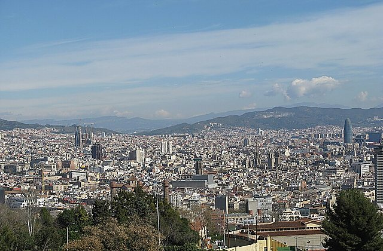
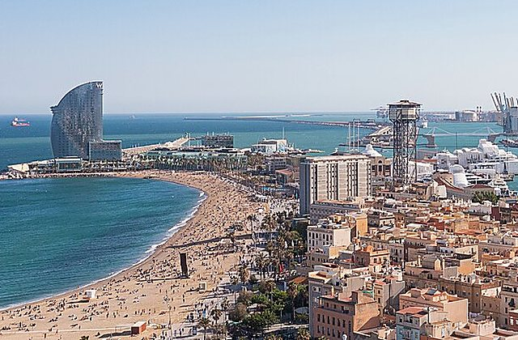

왜 중요한가숙소은(는) 오늘의 흐름에서 다음 장면으로 자연스럽게 이어지는 핵심 지점이다.
볼 포인트충분히 수면. 대표 풍경과 공간의 분위기에 집중한다.
실전 팁혼잡하면 핵심을 보고 이동하고, 예약 장소는 15분 일찍 도착한다.
시간 관리표시된 이동시간에 환승·대기 10분을 더한다.
도보Urgell Metro Barcelona → Sant Antoni Barcelona Restaurants12분 · 경로 ↗ 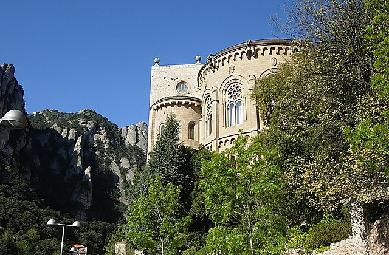
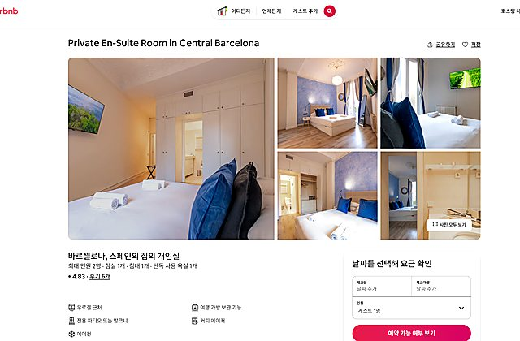
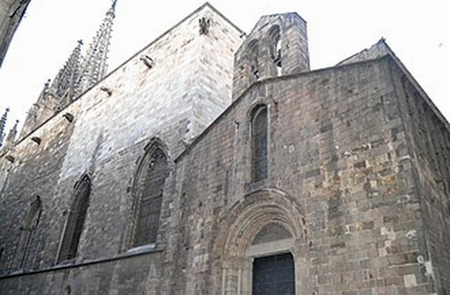
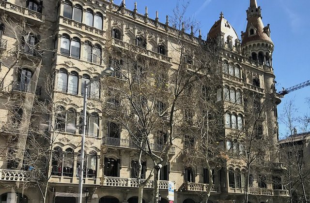
왜 중요한가Sant Antoni Lunch은(는) 오늘의 흐름에서 다음 장면으로 자연스럽게 이어지는 핵심 지점이다.
볼 포인트가벼운 점심. 대표 풍경과 공간의 분위기에 집중한다.
실전 팁혼잡하면 핵심을 보고 이동하고, 예약 장소는 15분 일찍 도착한다.
시간 관리표시된 이동시간에 환승·대기 10분을 더한다.
MetroSant Antoni Barcelona → Placa de Catalunya Barcelona10분 · 경로 ↗ 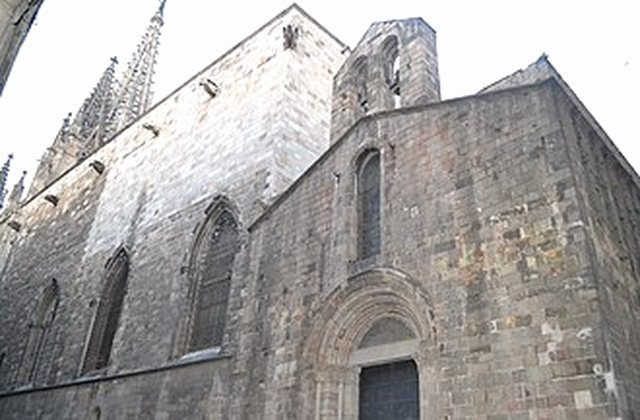
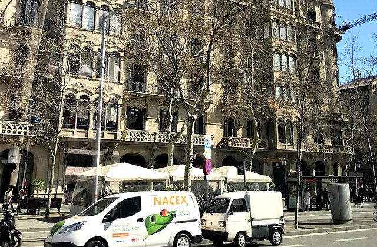
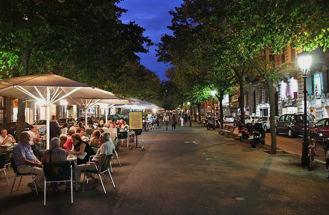
왜 중요한가Plaça Catalunya은(는) 오늘의 흐름에서 다음 장면으로 자연스럽게 이어지는 핵심 지점이다.
볼 포인트올드타운 시작. 대표 풍경과 공간의 분위기에 집중한다.
실전 팁혼잡하면 핵심을 보고 이동하고, 예약 장소는 15분 일찍 도착한다.
시간 관리표시된 이동시간에 환승·대기 10분을 더한다.
도보Placa de Catalunya Barcelona → Barcelona Cathedral14분 · 경로 ↗ 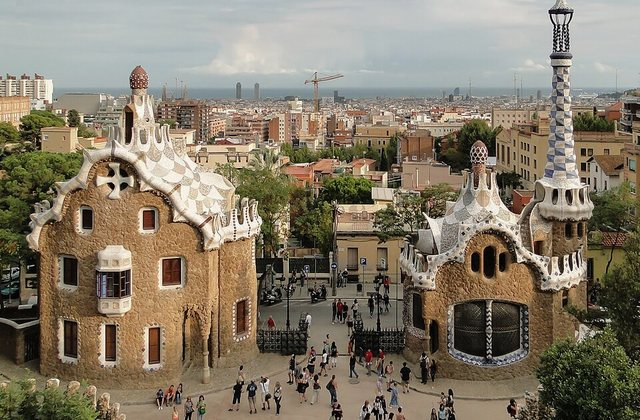
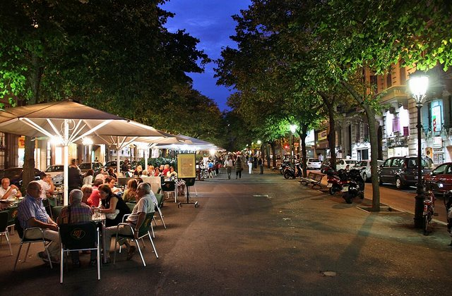
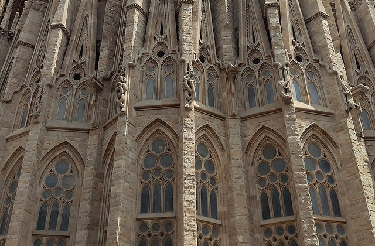
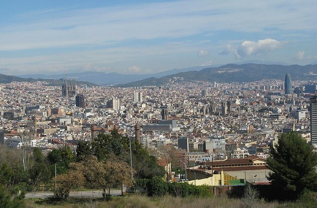
왜 중요한가Barcelona Cathedral은(는) 오늘의 흐름에서 다음 장면으로 자연스럽게 이어지는 핵심 지점이다.
볼 포인트성당·회랑. 대표 풍경과 공간의 분위기에 집중한다.
실전 팁혼잡하면 핵심을 보고 이동하고, 예약 장소는 15분 일찍 도착한다.
시간 관리표시된 이동시간에 환승·대기 10분을 더한다.
도보Barcelona Cathedral → Placa del Rei Barcelona5분 · 경로 ↗ 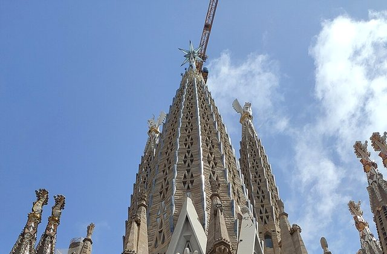
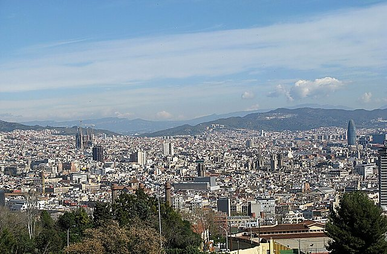
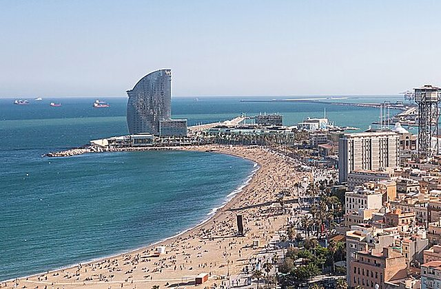
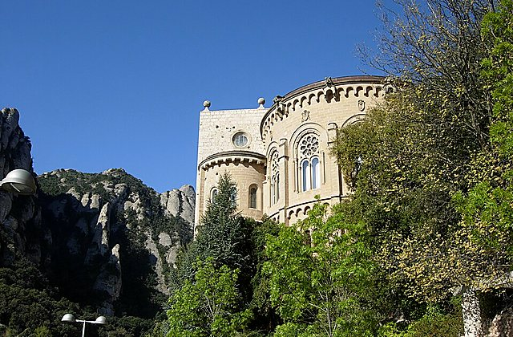
왜 중요한가Plaça del Rei은(는) 오늘의 흐름에서 다음 장면으로 자연스럽게 이어지는 핵심 지점이다.
볼 포인트중세 광장. 대표 풍경과 공간의 분위기에 집중한다.
실전 팁혼잡하면 핵심을 보고 이동하고, 예약 장소는 15분 일찍 도착한다.
시간 관리표시된 이동시간에 환승·대기 10분을 더한다.
도보Placa del Rei Barcelona → Gothic Quarter Barcelona20분 · 경로 ↗ 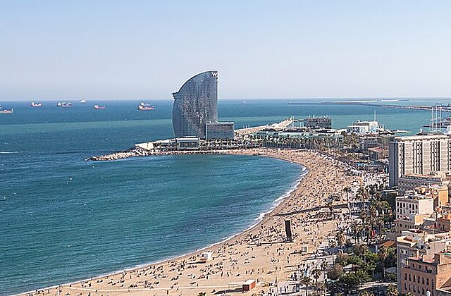
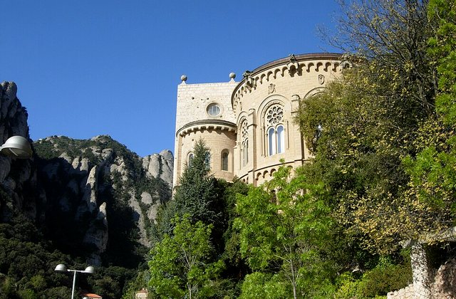
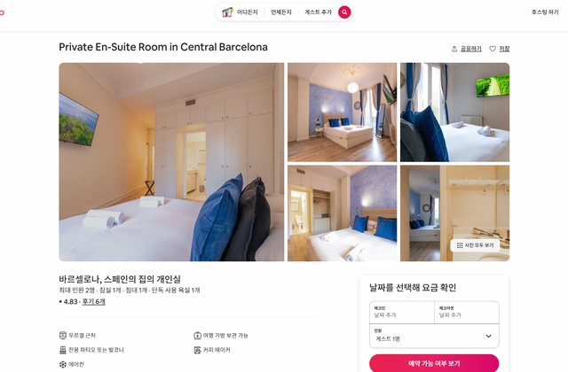

왜 중요한가Gothic Quarter은(는) 오늘의 흐름에서 다음 장면으로 자연스럽게 이어지는 핵심 지점이다.
볼 포인트골목 산책. 대표 풍경과 공간의 분위기에 집중한다.
실전 팁혼잡하면 핵심을 보고 이동하고, 예약 장소는 15분 일찍 도착한다.
시간 관리표시된 이동시간에 환승·대기 10분을 더한다.
도보Gothic Quarter Barcelona → Santa Maria del Mar Barcelona15분 · 경로 ↗ Santa Maria del Mar
카탈루냐 고딕
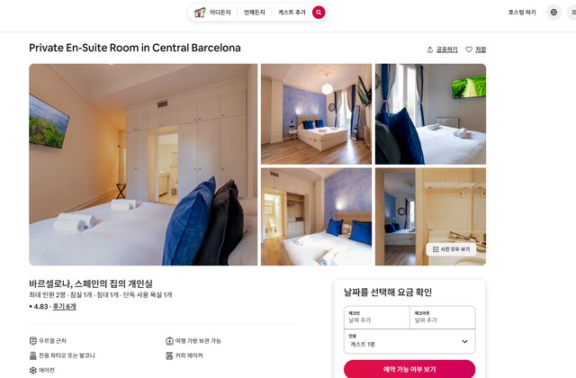
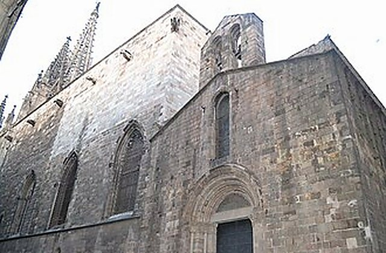
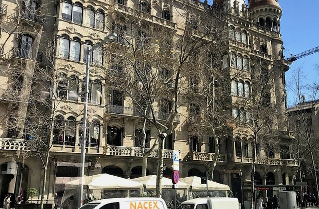
왜 중요한가Santa Maria del Mar은(는) 오늘의 흐름에서 다음 장면으로 자연스럽게 이어지는 핵심 지점이다.
볼 포인트카탈루냐 고딕. 대표 풍경과 공간의 분위기에 집중한다.
실전 팁혼잡하면 핵심을 보고 이동하고, 예약 장소는 15분 일찍 도착한다.
시간 관리표시된 이동시간에 환승·대기 10분을 더한다.
도보Santa Maria del Mar Barcelona → El Born Barcelona10분 · 경로 ↗ 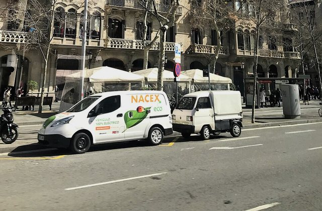
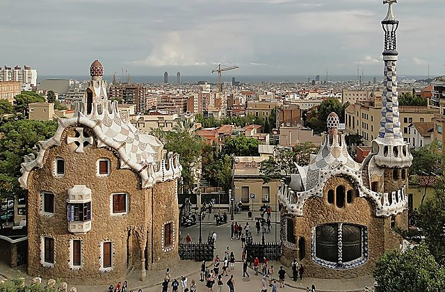

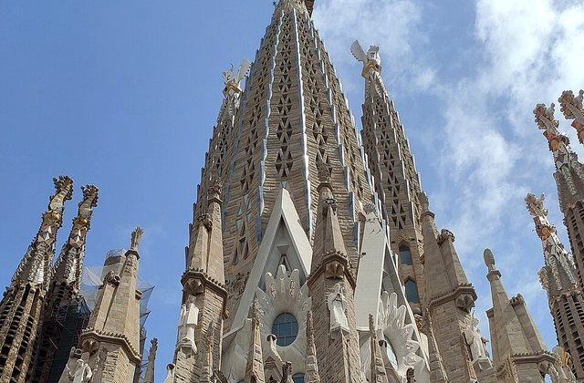
왜 중요한가El Born은(는) 오늘의 흐름에서 다음 장면으로 자연스럽게 이어지는 핵심 지점이다.
볼 포인트카페·칵테일·저녁. 대표 풍경과 공간의 분위기에 집중한다.
실전 팁혼잡하면 핵심을 보고 이동하고, 예약 장소는 15분 일찍 도착한다.
시간 관리표시된 이동시간에 환승·대기 10분을 더한다.
MetroEl Born Barcelona → Urgell Metro Barcelona12분 · 경로 ↗ 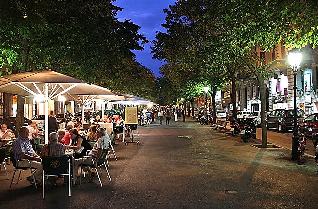
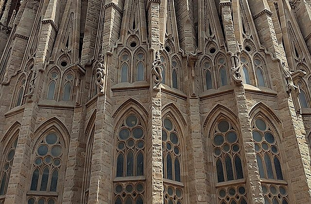
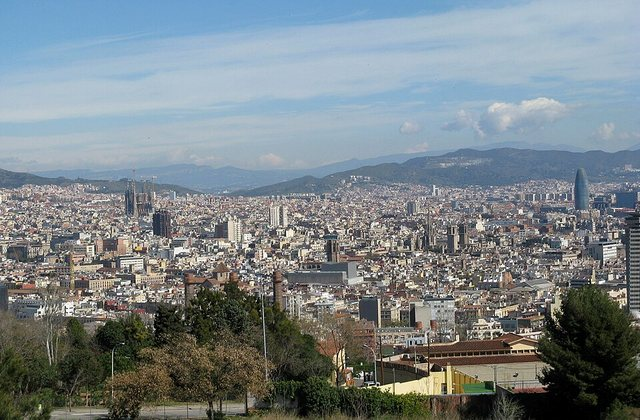
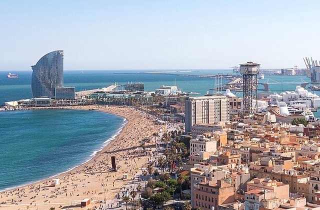
왜 중요한가숙소 복귀은(는) 오늘의 흐름에서 다음 장면으로 자연스럽게 이어지는 핵심 지점이다.
볼 포인트회복일 종료. 대표 풍경과 공간의 분위기에 집중한다.
실전 팁혼잡하면 핵심을 보고 이동하고, 예약 장소는 15분 일찍 도착한다.
시간 관리표시된 이동시간에 환승·대기 10분을 더한다.